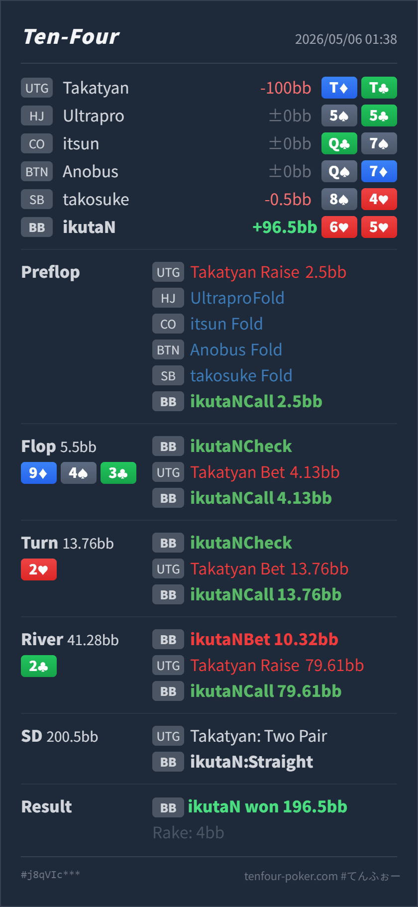

Preflop
やや広いが許容6♥5♥ は playability はありますが、UTG rangeに対しては下限寄りです。
GTO基準では、preflop と flop はやや下限寄り、turn 以降はかなり良いです。
6♥ 5♥T♦ T♣9♦ 4♠ 3♣ / 2♥ / 2♣65s はUTG大きめopen相手に自動defendしない。入った後は、強く完成した時に overpair から取り切る計画を持つ。AA-KK/QQ-JJ/TT のような overpair が多く、実戦でもそこが大きく残ります。6♥ 5♥T♦ T♣2.5BB, HJ fold, CO fold, BTN fold, SB fold, BB Hero call9♦ 4♠ 3♣ / 2♥ / 2♣5.5BB, BB Hero check, UTG bet 4.13BB, BB Hero call13.76BB, BB Hero check, UTG bet 13.76BB, BB Hero call41.28BB, BB Hero bet 10.32BB, UTG raise 79.61BB, BB Hero call196.5BB, rake 4BB
やや広いが許容6♥5♥ は playability はありますが、UTG rangeに対しては下限寄りです。
9♦ 4♠ 3♣境界だが許容
Hero は pair なしですが、2 と 7 で straight になる open-ended draw です。
2♥良い / raiseも有力
Hero は現時点でほぼ最上位の straight です。
2♣良い6♥5♥ はnutsではありませんが、overpairと下のstraightには大きく勝つ強い value hand です。
| 論点 | その場で置いた見立て | どこがズレやすいか | 次回の基準 |
|---|---|---|---|
UTG大きめopenへの 65s defend | suited connector なのでBBから見られそう | 基準の UTG open は 2BB で、今回は 2.5BB です。価格が悪く、UTG rangeも強いので、低い suited connector は下限寄りになります。 | 早い位置の大きめopenには、65s/54s は相手依存の境界。postflopで相手が払いすぎる読みが薄ければ少し削る |
| paired river の straight | board が paired したので full house が怖い | full house は確かに上にありますが、UTG の large barrel range には overpair がかなり残ります。small lead に対して、それらが value と誤認してraiseすることもあります。 | straight は paired river で絶対nutsではないが、overpair が多い相手にはまだ強い value hand。raise には相手の overpair 過大評価を先に数える |
| ストリート | その時点の見え方 | 実ハンドの位置づけ | 評価 | その場の一手 |
|---|---|---|---|---|
| Preflop | UTG の 2.5BB open は、基準サイズの 2BB より大きめです。BB vs UTG では suited connector も一部 defend できますが、大きいopenでは下側が落ちやすくなります。 | 6♥5♥ は playability はありますが、UTG rangeに対しては下限寄りです。 | やや広いが許容 | 相手が標準〜強めならfoldも混ぜます。相手がpostflopでoverpairを降りにくいならcallの実現価値が上がります。 |
Flop 9♦ 4♠ 3♣ | UTG は overpair、99、強い broadway を多く持ちます。BB 側は 44/33/65/76/54 などでこの低い board に絡めます。UTG の 75% c-bet はやや強い圧です。 | Hero は pair なしですが、2 と 7 で straight になる open-ended draw です。 | 境界だが許容 | call は成立します。ただし大サイズなので、何でも追うのではなく、implied odds がある combo に絞ります。 |
Turn 2♥ | 65 がstraightを完成し、BB側にかなり強い hand ができます。UTG が pot bet するなら、overpair、set、強い bluff がかなり強く押してきています。 | Hero は現時点でほぼ最上位の straight です。 | 良い / raiseも有力 | check-call はtrapとして良いです。一方で、UTG が overpair を降りにくい相手なら、ここでcheck-raiseしてriverのboard pair前に大きく取る選択もかなり有力です。 |
River 2♣ | board pair で 99/44/33/22 の full house が上に来ます。ただし UTG には AA-JJ/TT などの overpair も多く、turn pot betからriverで弱くなったと認めにくい構造です。 | 6♥5♥ はnutsではありませんが、overpairと下のstraightには大きく勝つ強い value hand です。 | 良い | 10.32BB の small lead は、overpairからcallを取りつつraiseも誘えます。大きくraiseされても、full houseだけに寄せすぎず call で問題ありません。 |
2.5BB open は早い位置として大きめです。BBの低い suited connector は「守れることもある」くらいで、自動callにはしません。65 が完成したら、callで隠すだけでなく、相手が overpair を降りない前提なら check-raise も候補にします。T♦T♣ で、flop 75%、turn pot、river small lead への大raiseまで進んでいます。このタイプには、完成した straight / set / two pair でかなり強く value を取りに行けます。